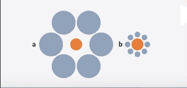
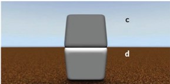
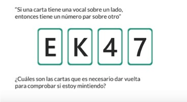

Por qué fallamos en nuestras finanzas personales: entendiendo cómo decidimos
El truco está en como decidimos. A continuación, sigue las siguientes instrucciones y veras de lo que hablamos:
- Descarga el siguiente excel y coloca una "X" en tu respuesta.
- Lee la pregunta
- Toma la decisión que sientas correcta
- Utiliza la intuición
- Toma la desición lo más rápido que puedas
1. ¿Qué prefieres?
- a) $ 50 000 al terminar este formulario
- b) $ 70 000 mañana el empezar el día
1.2
- a) $ 50 000 al terminar este formulario
- b) $ 70 000 en junio del proximo año
2. ¿Qué harías ?
- Eres el administrador de una conocida multinacional que ha invertido 10 millones de dólares para producir unos revolucionarios tenis “Inteligentes” capaces de autorregularse en función del terreno y de las características del usuario. Cuando el proyecto esta completado al 80% te enteras de que otra empresa importante, ya está vendiendo unas zapatillas con las mismas características, que funciona mejor y cuestan menos de las que tú quieres producir.
¿Inviertes el 20% restante para acabar el proyecto?
3. ¿Cuál de los dos círculos naranjas es más grande?

3.1 ¿Cuál de los dos cuadrados es más oscuro?

4. ¿Qué prefieres?
1.1 Acabas de ganar 10000 dólares y en una segunda fase debes escoger un premio adicional.
- a) Una ganancia segura de 5,000 dólares
- b) Una probabilidad del 50% de ganar 10,000 dólares más un 50% de no llevarte nada
- c) Eres totalmente indiferente.
1.2 Acabas de ganar 10,000 dólares y en una segunda fase debes escoger una multa
- a) Una perdida segura de 5,000 dólares mas
- b) Una probabilidad del 50% de perder.
- c) Eres totalmente indiferente
5. ¿Cuánto me pedirías que te pagara cada vez que caiga sol para animarte a jugar ?
- a) Menos de 10, 000 dólares
- b) 10 dólares
- c) 20 dólares
- d) 30 dólares
- e) 40 dólares
6. ¿De cual te arrepientes más?
- a) Tienes acciones de la compañía A. Durante el año pasado consideraste cambiarte a la compañía B, pero decidiste no hacerlo. Ahora te has enterado de que habrías ganado 1,200 dólares más de haberte pasado a la compañía B.
- b) Tenias acciones de la compañía B. El año pasado te cambiaste a la compañía A. Ahora te has enterado de que habrías ganado 1200 dólares mas de haber permanecido en la compañía B.
7. ¿Cuál es tu estimación de la probabilidad de sufrir un accidente de avión ?
Considera que la probabilidad de...
8. Observa y lee con atención la imagen
